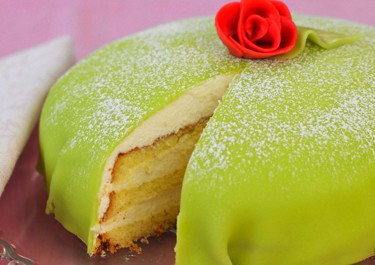

Prinsesstårta

Princess Tårta is a classic Swedish dessert that combines layers of soft, moist sponge cake with rich, velvety custard, and a light, whipped cream filling. It is traditionally covered with a smooth layer of marzipan, often green, which gives it its signature appearance. The cake is typically adorned with a small rose or ribbon on top for decoration. The delicate balance of sweetness from the marzipan and cream, along with the lightness of the sponge, makes Princess Tårta a favorite for celebrations and special occasions in Sweden. Its elegant look and delightful flavor have made it an iconic part of Swedish pastry culture.
Princess Tårta is a light and indulgent cake with layers of soft sponge, creamy custard, and fluffy whipped cream. The entire dessert is covered in a smooth, sweet marzipan coating, often in a pale green color. The combination of delicate flavors, with the richness of the custard and cream and the almondy sweetness of the marzipan, creates a perfect balance of textures and tastes. Every bite offers a delightful sweetness, making Princess Tårta a beloved treat for any special occasion.
Ingredients
- Sponge Cake
- Whipped Cream
- Pastry Cream
- Marzipan
- Powdered Sugar
- Raspberry Jam
- Almond Extract
- Fresh Rose or Ribbon (optional, for decoration)
Steps
- Preheat the oven to 175°C for baking the sponge cake.
- Prepare the sponge cake by whisking together eggs and sugar until fluffy, then folding in flour and baking powder. Pour the batter into a greased and floured 8-inch cake pan. Bake for 20-25 minutes, or until a toothpick comes out clean. Let it cool completely.
- Make the pastry cream by heating milk and sugar in a saucepan. Whisk together egg yolks and cornstarch in a separate bowl, then slowly add the warm milk to the egg mixture. Return to the heat and stir until thickened. Remove from heat and let cool.
- Whip the cream by beating heavy cream with powdered sugar and vanilla extract until stiff peaks form.
- Slice the cooled sponge cake into two or three layers.
- Spread raspberry jam (optional) over the bottom layer of cake.
- Spread pastry cream evenly over the jam layer.
- Add whipped cream on top of the pastry cream.
- Place the final layer of sponge cake on top, pressing gently to seal.
- Roll out marzipan on a powdered-sugar-dusted surface until it’s large enough to cover the cake.
- Cover the cake with the rolled-out marzipan, smoothing out any wrinkles and trimming excess.
- Dust the top with powdered sugar for a finishing touch.
- Chill the cake in the refrigerator for a few hours or overnight to set the layers.
- enjoy